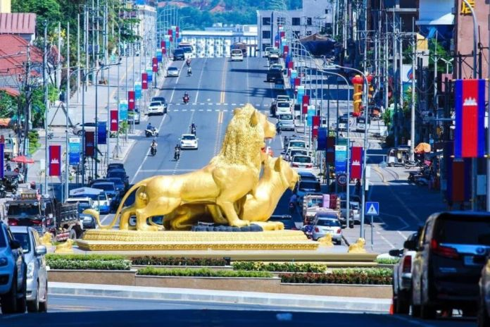

ការពិពណ៏នាអំពី ខេត្តនីមួយៗនៅក្នងប្រទេសកម្ពុជា
ទំព័រដើម
តាកែវ
ភ្នំពេញ
កែប
ព្រះសីហនុ
ស្វាយរៀង
កំពង់ធំ
បាត់ដំបង
ពោធ៏សាត់
សៀមរាប
រតនគីរី
មណ្ឌលគីរី
ក្រចេះ
ត្បូងឃ្មុំ
កំពង់ចាម
ព្រៃវែង
កណ្តាល
ឧត្តរមានជ័យ
កំពង់ឆ្នាំង
កំពង់ស្ពឺ
បន្ទាយមានជ័យ
កោះកុង
ប៉ៃលិន
កំពត
ស្ទឹងត្រែង
ព្រះវិហារ
ទំនាក់ទំនង
ខេត្តព្រះសីហនុ

ព័ត៌មានសង្ខេបអំពីខេត្តព្រះសីហនុ
> ក្រុងព្រះសីហនុ ជាក្រុងធំបង្អស់នៅប៉ែកខាងត្បូងនៃប្រទេសកម្ពុជា ។ នេះជាក្រុងដែលត្រូវបានបង្កើតថ្មី នៅឆ្នាំ១៩៦៤ ។ ការបង្កើតក្រុងព្រះសីហនុ គឺដើម្បីរំឭកដល់ស្នាដៃរបស់ព្រះបាទនរោត្តមសីហនុ ។ ឈ្មោះដើមរបស់ក្រុងព្រះសីហនុ មុនឆ្នាំ១៩៦៤គឺកំពង់សោម ។
ក្រុងព្រះសីហនុ ជាទីក្រុងកំពងផែសមុទ្រធំបង្អស់នៅឆ្នេរសមុទ្ររបស់ប្រទេសកម្ពុជា ។ ក្រុងព្រះសីហនុស្ថិតនៅពាក់កណ្តាល ចន្លោះប្រទេសថៃ និងប្រទេសវៀតណាម ហើយក្រុងព្រះសីហនុជាទីក្រុងសំខាន់ជាងគេ នៅឈូងសមុទ្រថៃ ។ ក្រុងព្រះសីហនុជាកន្លែងដែលគួរឱ្យចាប់អារម្មណ៍ណាស់ សម្រាប់ទេសចរណ៍ជាតិនិងអន្តរជាតិ ។ យោងតាមឯកសារក្រសួងទេសចរណ៍នៃប្រទេសកម្ពុជា បានឱ្យដឹងថា ក្នុងឆ្នាំ២០០៦ មានចំនួនទេសចរណ៍អន្តរជាតិ ប្រមាណជាង ៣២០,០០០ នាក់ មកទស្សនាក្រុងព្រះសីហនុ ។ នៅខែមករា ឆ្នាំ២០០៧ ព្រលានយន្តហោះនៅក្រុងព្រះសីហនុ ត្រូវបានបើកសម្ពោធដើម្បីការហោះហើរជាសំខាន់ ក្រុងសៀមរាប-ក្រុងព្រះសីហនុ ហើយតាមគម្រោងនៃរាជរដ្ឋាភិបាល បានឱ្យដឹងថាព្រលានយន្តហោះនៃក្រុងព្រះសីហនុនឹងក្លាយជាព្រលានយន្តហោះអន្តរជាតិនៅឆ្នាំ២០១០ ។
> ទីក្រុងព្រះសីហនុមានរដូវរងា ចាប់ពី វិច្ឆិកាដល់ខែកុម្ភះ និង មានរដូវលំមានប្រាំង ចាប់ ខែមិនា ដល់ខែឧសភា រដូវភ្លៀង មានចាប់ពី ខែមិថុនា ដល់ខែតុលា៕ ទីក្រុងព្រះសីហនុ គឺជាក្រុងដែលមានភ្លៀងធ្លាក់ច្រើនជាងគេ នៅប្រទេសកម្ពុជាយើង ពីព្រោះមាន ភ្នំបូគោ នៅខាងជើង។ នៅថ្ងៃដែលក្តៅជាងនៅទីក្រុងព្រះសីហនុ មានកំដៅរហូតទៅដល់ ៣៥អង្សា ហើយបើត្រជាក់ជាងគេវិញមានរហូត ២០អង្សា ៕
> ខេត្តព្រះសីហនុ មានចំនួន ៤ ស្រុក/ក្រុង :
- ក្រុងព្រះសីហនុ
- ស្រុកស្ទឹងហាវ
- ស្រុកព្រៃនប់
- ស្រុកកំពង់សូម